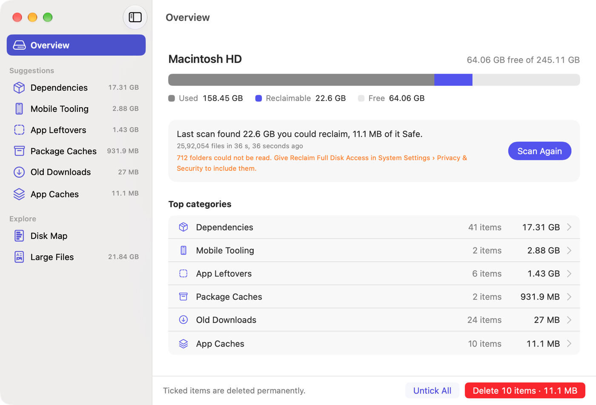

Get your Mac's disk space back.
Reclaim scans the whole disk, explains what is safe to delete, and removes what you tick in one click. Built for developer Macs that keep filling up with build caches, node_modules and emulator images.
Free and open source (MIT). macOS 14 or later, Apple silicon and Intel.

What it does
One scan, then a list you can trust: every suggestion says what it is, why it is there and what happens after you delete it.
🔎 Scans everything
Walks the whole disk in parallel, about a minute for a full Mac. Sizes are what files really occupy, so sparse disk images and hard links are counted correctly.
🧹 Knows developer junk
.next, .turbo, Xcode DerivedData, Rust target, node_modules, Composer vendor, Gradle and npm caches, emulator snapshots, and more.
🚦 Three safety levels
Safe rebuilds itself. Rebuild needs a reinstall. Personal is your data. Only Safe is ticked for you.
⚡️ One-click delete
No "Are you sure?" for every file. Tick, click, done, with a summary of what was freed and anything that could not be removed.
🗺 Disk map
The whole disk as a size-sorted tree. Drill into any folder and tick anything that is not protected.
👯 Duplicate files
Finds files with identical contents, ignores hard links, and spots APFS copies that share storage, so the space it reports is real.
🐳 Docker and OrbStack
Build cache, dangling and unused images, stopped containers and unused volumes, removed with Docker's own commands.
🔐 System junk
An optional helper deletes system caches and logs, root-owned leftovers and local Time Machine snapshots, and answers only to Reclaim.
🛡 Hard limits
Never deletes the disk root, system folders, your home folder or folders like Documents as a whole, however the path is spelled.
🎨 Yours to tune
Indigo by default, or any accent colour. Light or dark. Choose what to scan, what to skip and what counts as large or old.
🔒 Private
No account, no analytics, no network access. Your file list never leaves your Mac.
See where the space went
The Disk Map shows every folder by size, with how much of its parent it takes up. Double-click to go deeper.

Coming next
These are being built for version 0.1 and will be documented here as they land.
Menu bar and schedules Soon
Free space at a glance, low-space alerts, and daily or weekly scans.